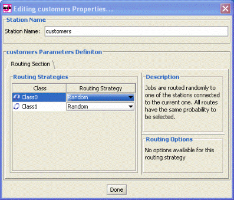
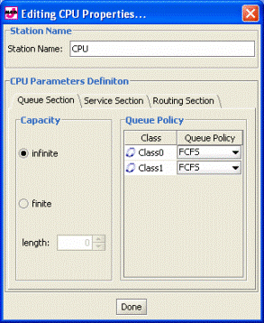
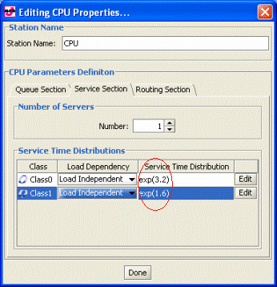
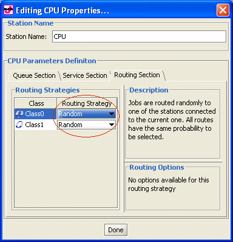
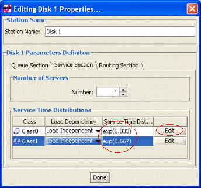

_________________________________________
Define the parameters of the stations included in the network.
In our example of web server, we have 1 source station, 3 servers and 1 sink, having the following equal properties:
All routing strategies for each customer class are Random.
All the server stations have an Infinite Capacity Queue and its Policy is set to FCFS.
In all the stations, the Service Time is Load Independent with Exponential Time Distribution, with different rate λ values depending on the main value μ.
Customers Station
- Routing Section:
Set Random for each Class.:

CPU Station:
- Queue Section
Set infinte capacity and the policy to FCFS as in the figure :

- Service Section:
We suppose the CPU serves requests independently of the number of jobs (Load Independent) following an Exponential Service Time distribution with λ=3.2 for Class0 and with λ=1.6 for Class1.

- Routing Section:
Set all Routing Strategies as Random

Disks Station:
To set the Service Time press "Edit" and insert the mean value C (see table). The rate value λ is immediately calculated.
c |
Disk 1 |
Disk 2 |
Class0 |
1.2 |
1.5 |
Class1 |
2.0 |
2.2 |

Out Station:
Set only the name, no parameter is required.